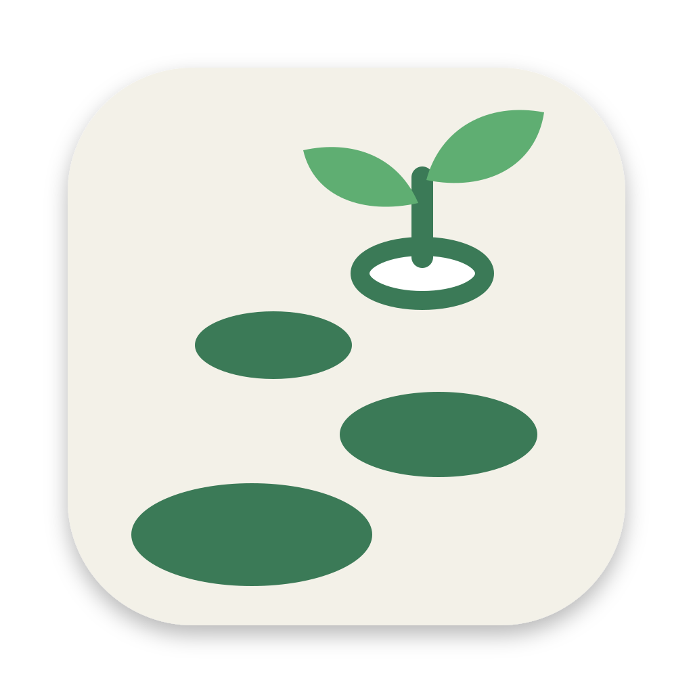

Issue #45. Each tile uses the macOS icon grid (824 px squircle in a 1024 canvas). Palette from garden.html.
A seedling grows out of an open book. It says “learn and grow” at once, and the two shapes stay clear at 16 px.
A path of stones leads to a ringed “next” stone and a sprout. It echoes the stepping-stone progress in the app, but it is the busiest mark at 16 px.

512 pxA single leaf holds a play button. It joins the garden theme with video lessons and is the boldest silhouette at small sizes.